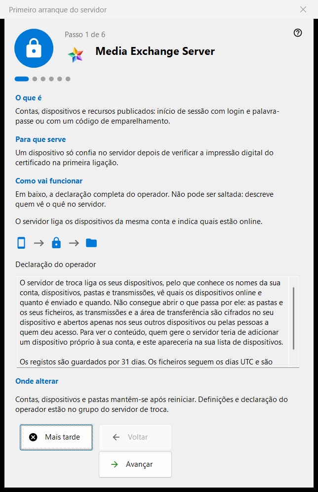
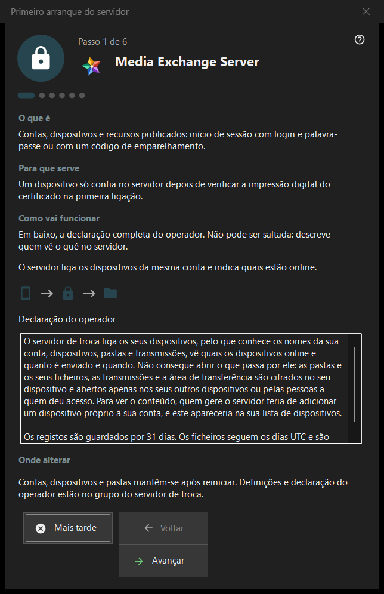

Primeira inicialização do servidor
Finalidade
Um guia de primeira inicialização para o grupo do servidor de troca do Share Manager. Explica em que se transforma o computador, mostra a declaração do operador, define as portas, o endereço para os clientes e a primeira conta, e termina no estado do servidor. Só se abre quando o servidor de troca está presente e ativado.


Nesta ordem
- Leia a declaração do operador na primeira página.
- Revise as portas e a regra da firewall.
- Em uma edição de servidor sem serviço, decida sobre o serviço do Windows.
- Preencha o endereço para os clientes.
- Crie a primeira conta.
- Verifique a impressão digital do certificado e pressione «Concluir».
Os elementos
Páginas e botões
O rodapé mostra «Passo N de M»; «Voltar», «Avançar» e «Mais tarde» funcionam como em qualquer assistente, e «Concluir» na última página abre o grupo do servidor de troca do gerenciador. É possível pular uma página sem alterações: o servidor fica então desligado ou como estava.
Declaração do operador
A declaração completa de quem vê o quê no servidor. Não pode ser pulada. O servidor conecta os dispositivos de uma conta e indica quais estão online.
Portas e firewall
Uma porta de encontro para os dispositivos e um intervalo de portas para clientes de terceiros. Os dispositivos precisam conhecer a porta do servidor, por isso as alterações só se aplicam aos códigos novos. A regra da firewall pertence ao programa, por isso uma mudança de porta não precisa de uma regra nova. Estes valores ficam no grupo do servidor de troca.
Serviço do Windows
Só é mostrado em uma edição de servidor em que o serviço ainda não existe. Um serviço mantém o servidor disponível quando ninguém fez login. A caixa de verificação apenas registra o seu consentimento: o serviço é registrado depois de existir a primeira conta, com um único pedido de elevação, e nada é instalado antes. «Registrar como serviço..» no grupo de troca faz o mesmo mais tarde.
Endereço para os clientes
«Endereço para os clientes (host:porta):» é o que os outros dispositivos usam para chegar a este computador. «Sugerir um endereço local» só preenche o campo quando você o pressiona. Um endereço vazio mantém válida uma primeira inicialização puramente local, mas esconde as transmissões e as conexões de pastas dos outros dispositivos.
Primeira conta
A conta com que o primeiro dispositivo entra. Escolha «Gerar uma senha» ou «Digitar sua senha»; «Conectar este PC à conta» conecta este computador à conta. «Avançar» cria a conta, inicia o servidor e verifica o certificado. A senha é mostrada uma única vez, na caixa de diálogo existente, e não é salva neste PC. Uma falha depois da criação da conta não a remove.
O servidor está pronto
A última página indica onde ficam registrados o endereço, o usuário e a impressão digital do certificado e oferece «Copiar impressão digital» e «String de conexão e código QR..». Um dispositivo confia no servidor depois de verificar a impressão digital na primeira conexão. Os links «Conectar um telefone (ajuda)» e «Publicar a primeira pasta (ajuda)» levam às páginas de ajuda correspondentes.
Configurações do gerenciador · Configurações de compartilhamento SFTP · Configurações do servidor de troca